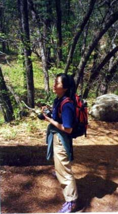
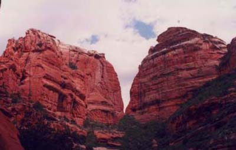
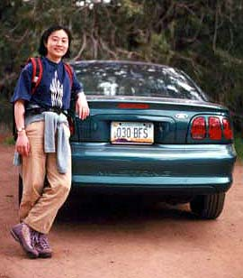
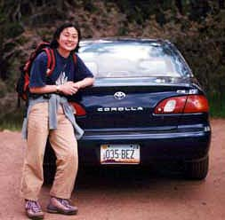

セドナ日記 〜 第２日目 98.5.5
ボイントンキャニオンへ
ボイントンキャニオンはセドナにあるボルテックスの中で唯一、「谷」である。（ほかのボルテックスは全て岩山。）
４つのボルテックスはすべて廻るつもりだったが、まずは、ダウンタウンからは一番遠いところにあるボイントンキャニオンを選んだ。B＆Bからは、まず89Aを西に向かう。例の白地図にもあるとおりDRY CREEK RDを右折する。白地図では、実際の距離感覚はなんともつかめないので、ここは、ひたすら、「DRY CREEK RD」の看板がないかどうか、全ての交差点を確認していった。（しかし、アメリカというか欧米の道路はどんな小さな道路にも名前がついていて便利ですね）ちゃんと、看板を見つけることができ、DRY CREEK RDへ、3マイル走ったら、道が突き当たるので、そこを左折し、BOINTON PASS RD.へ。さらに２マイルいったところを右折して、BOINTON CANYON RD.に入る。しばらく走ると、（たぶん）右側にたくさん車が駐車しているのが見えてくると、そこがボイントンキャニオンに入っていくトレイルの入り口である。「RED ROCK SECRET MOUNTAIN WILDERNESS」という看板赤い小道のスタート地点に立っていた。白と黄色の蝶がとんでいた。蝶は縁起がいいという。ラッキーかもしれない。
デイパックにはカメラと、水と、お弁当のりんごとチョコレートが入っている。谷にそって、トレイルを歩き出した。すると、そこに、知ってる顔が。そう、朝食のときにあった、フロリダからきた、カップルがいた。「グランドキャニオンにいったのでは？」と聞くと、ボイントンキャニオンのあとグランドキャニオンに向かうとのことであった。（彼らには谷の日だったようだ）彼等は、少し寄り道するようで、僕らは先に谷を進んだ。
「ここがボルテックスかあ」とかんがいに浸りながら、進んでいく。谷の両側は、赤い岩の壁である。この谷の中心線上、すなわち谷底にはもちろん沢があるのだが、この時期は枯れていた。そして、谷底には沢山の植物が育ち、森を形成していた。木々の葉っぱからの「こぼれ日」が美しい。その場にいたときはそれ程でもなかったのだが、思い出すと、すごく存在感のある森だっと思う。「気配はすれども姿は見えず」という感じだろうか。それで、その感じが何か、よくわからないのだけれども...。
トレイルはかなり長く続いているのだが、１時間以上あるいても、まだまだ続く。どこまでいくのかちょっと不安になる。しかも、オフシーズンのせいか、全く他の人にあわない。しかも谷底を歩いているので、自分の位置を把握できない。
どうしようかな、と思っていたら、向こうから、やってくるグループが来た。彼等に聞くと、もう少しで、谷の一番奥に行き着くとのことであった。しばらくいくと、森が深まり、急な坂道になってきた。さらに、坂道の角度が上がると、急に視界がひらけた。素晴しい！そこまで歩いてきた、谷が眼下に広がる。最後の急坂を登りきると、何億年か、かかってできたという谷がみわたせた。入り口から約２時間。ついに谷の奥にたどり着いた。心身休まる感じの場所であった。 お弁当のりんごとチョコを食べる。これまた、おいしい。しばらくすると、先ほど会った、フロリダのカップルも追い付いてきた。しばらくするとジョギングスタイルのおじさんもやってきた。（この人本当に走ってるようで、帰り道走って追い抜かれた。）この谷にいたのは僕らだけではなかったんだけど、このスケールでこれだけの人数じゃ、ほとんど貸切状態である。やっぱりアメリカはでかい！
食事の後、再び、来た道を戻る。今度は、距離感がつかめているので、歩きやすい。途中、千穂はスケッチを始めた。ぼくは昼寝をはじめた。気持ちのいい、谷だった。
谷から駐車場に戻る。千穂が車と写真を撮りたいと言いだした。僕らのレンタカーはトヨタカローラだったが、彼女は隣のMUSTANGによりそっていた。「そうか、これもアメ車だもんな。こういうのが好きなのかあ」とおもって、シャッターを切ったら、なんと、その車に乗ろうとするではないか。
実は単に、間違えていただけであった。車種はともかく、色が全然違うんだけど......。この辺から、「おとぼけ千穂ちゃん」の実力を発揮し始めたのだった。*ボイントンキャニオン情報＠セドナアップデイツ
左-MUSTANG 右-我らがカローラ